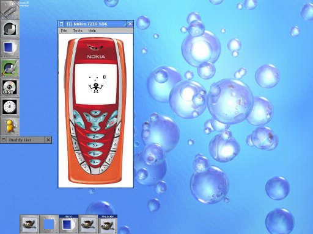

Nokia 7210 Emulator on Linux
The Nokia 7210 MIDP SDK v1.0 is for the Windows platform only (hmmm ... Java is not centered around any OS - the tools used in creating Java programs are .. that sucks!) This is bad when your primary platform is Linux. Nevertheless, it is entirely possible to get (at least) the Nokia 7210 Emulator running in Linux (under wine).
These instructions have been tested on a Slackware 10 box.
- Install Wine. It has probably already been compiled for your distribution - check your media CDs. I am using Wine 20041019.
- Download Nokia 7210 MIDP SDK v1.0 (You must have a valid Forum Nokia account to do so!). This is a 18MB download.
- Unzip the SDK:
unzip -d n7210 n7210_jme_sdk_v1_0.zip
- This reveals among other things a Microsoft Windows setup file. Unzip the setup file:
cd n7210
unzip setup.exe
- Unzip the SDK:
cd InstallerData
unzip Installer.zip
- Copy the SDK to a more permanent place. I store all my Nokia SDKs in /opt/Nokia:
cd C_/MIDP_Emulators
cp -dpR Nokia_7210_MIDP_SDK_v1_0 /opt/Nokia/Devices
- Delete the installation directory:
cd ../../../../
rm -fr n7210
- And that's it!
To start the emulator:
cd /opt/Nokia/Devices/Nokia_7210_MIDP_SDK_v1_0/bin
wine 7210.exe -classpath '/opt/Nokia/Devices/Nokia_7210_MIDP_SDK_v1_0/lib/classes.zip;/path/to/your/midlet.jar' /path/to/your/midlet.jad
... please be patient. It takes the emulator several seconds on my 2.4 GHz machine to initialize.
Alternatively, use n7210 from J2ME Tools.
Screenshot
So, here it is - running Juggle:

FAQ
- Can I build MIDlets using this SDK?
- Probably - I use the Series 30 SDK or Nokia 6230 SDK to build my MIDlets. I emulate using the Nokia 6230 or Nokia 7210 Emulators.
- What does this mean: err:wave:OSS_WaveOutInit /dev/mixer: Permission_denied?
- You sound is not working. A solution (for Slackware 10) could be:
sudo chmod 666 /dev/sound/mixer
- ... what about: err:msg:DispatchMessageA BeginPaint not called on WM_PAINT for hwnd 0x....?
- I really don't know. If you run a too early version of Wine you will see a lot of those messages. In Wine 20041019 I get a few but the emulator starts (after some time). If you get a lot of these messages your emulator might have gone AWOL and you have to restart it.
Home